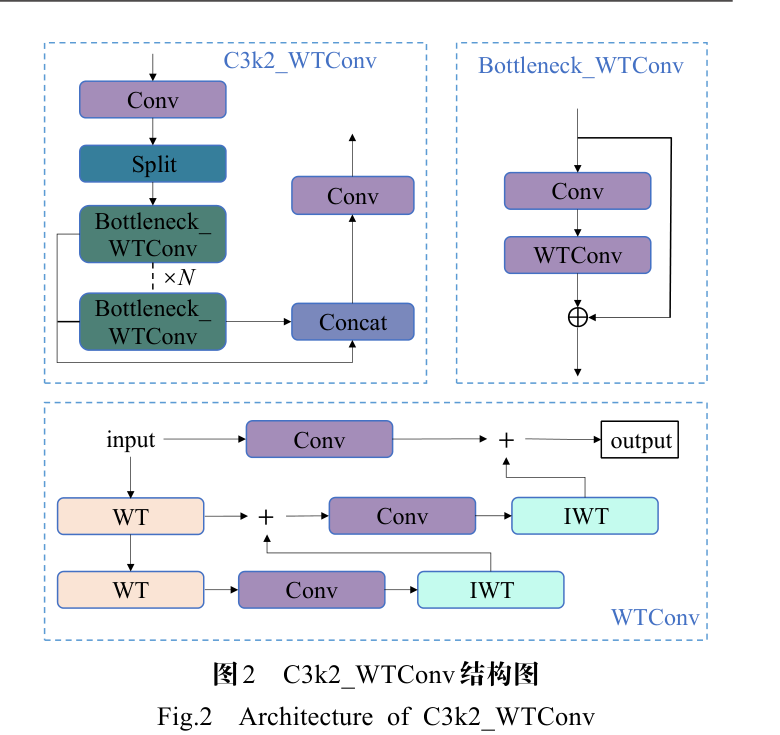
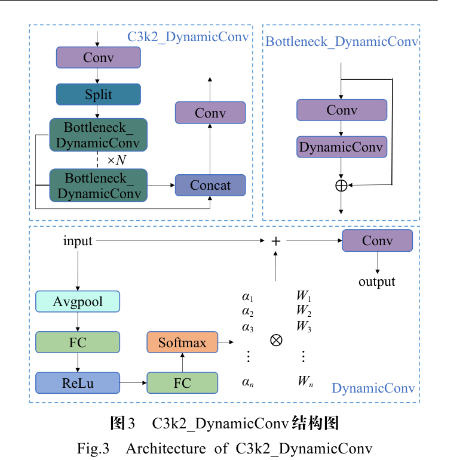
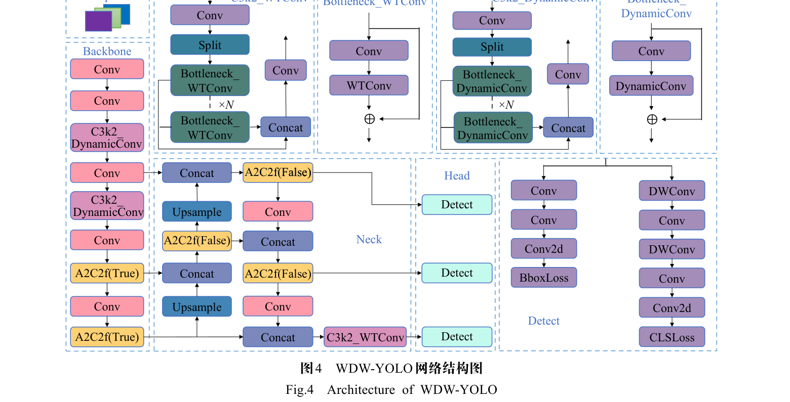
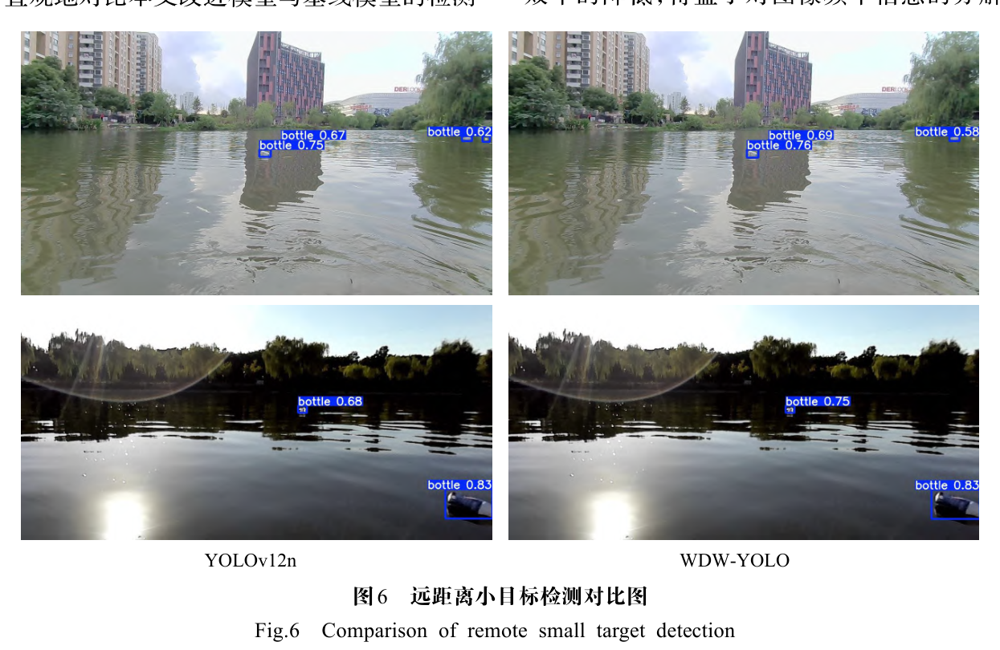
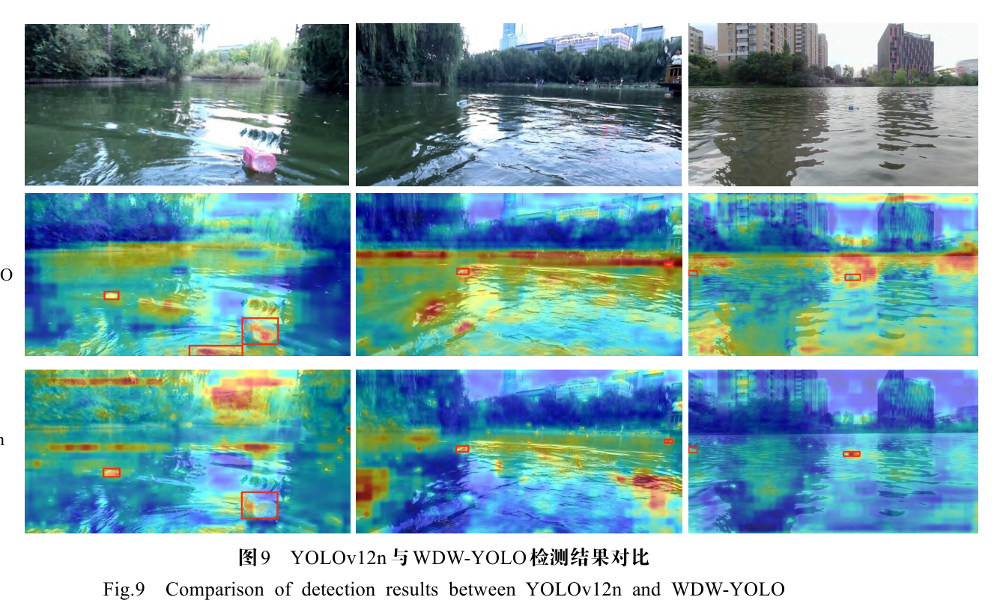
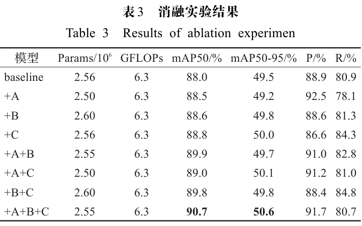
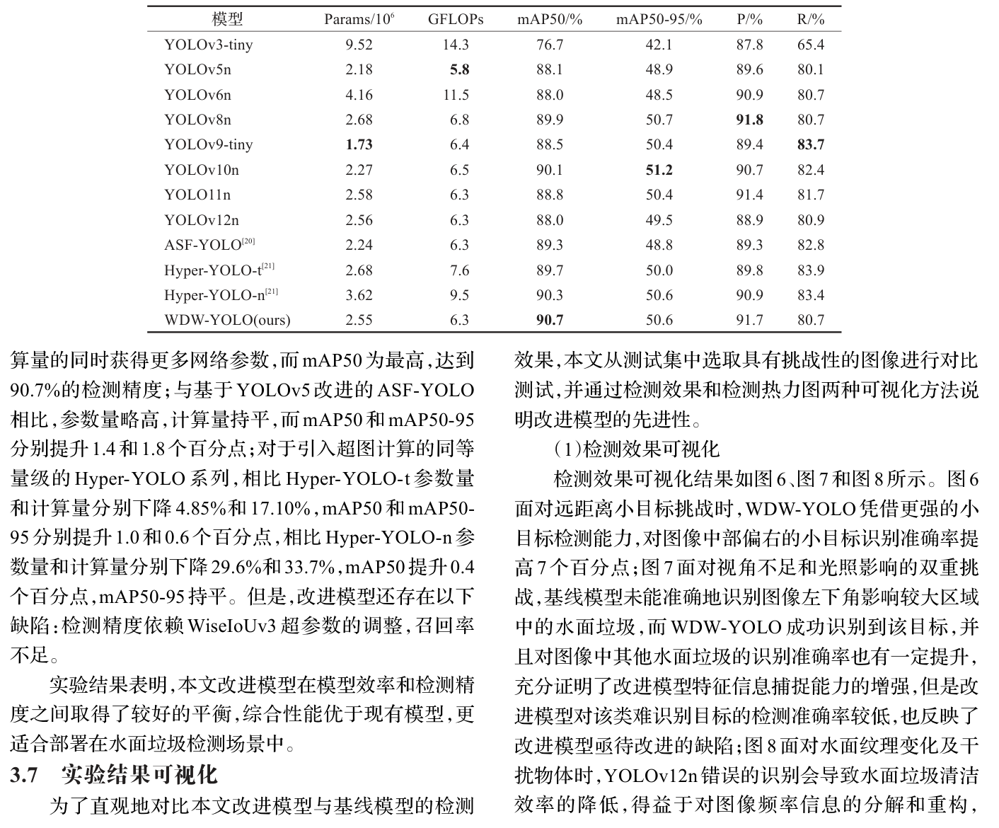

WDW-YOLO：基于小波变换扩大感受野、动态卷积增强特征捕捉、WiseIoUv3 平衡难易样本，在 FloW_IMG 数据集上 mAP50 达 90.7%、mAP50-95 达 50.6%。
引入基于 Haar 小波变换的 WTConv 替换颈部 Bottleneck，感受野随级联深度指数级增长而参数量仅对数级增长，过滤水面纹理高频噪声。
为每个输入样本动态生成卷积核权重，参数量扩大约 M 倍而计算量几乎不变，增加可学习参数增强特征信息捕捉能力。
替换 CIoU，用离群度评估锚框质量，针对水面小目标场景探究最佳超参数 α=1.5、δ∈[3.75,4.5]。
在 FloW_IMG 数据集上 mAP50 和 mAP50-95 分别提高 2.7 和 1.8 个百分点，达到 90.7% 和 50.6%。
本文从感受野、特征捕捉与样本平衡三条线切入，提出 WDW-YOLO 填补空白。

XLL(i), XLH(i), XHL(i), XHH(i) = WT(XLL(i-1))
每一层递归分解低频分量，四种滤波器形成正交基。
Y = IWT(Conv(W, WT(X)))
在不同频率图上执行小卷积核深度卷积后用 IWT 重新组合为空间域信号。
W' = ∑i=1M αi Wi，α = softmax(MLP(Pool(X)))
Ratioparam ≈ 1/K²+M，RatioFLOPs ≈ 1

LWIoUv1 = RWIoU(1 − IoU)， RWIoU = exp((x−xgt)2 + (y−ygt)2) / (Wg2 + Hg2)
LWIoUv3 在 v1 基础上乘以由离群度 β 与超参数 α、δ 调节的比例因子。本文最佳组合为 α=1.5、δ∈[3.75,4.5]。





三项改进分别对应感受野有限、特征捕捉弱与小目标检测能力弱三处短板，并给出参数量与计算量比值公式。
针对 WiseIoUv3 超参数在水面小目标场景开展网格实验，给出 α=1.5 与 δ∈[3.75,4.5] 的最佳组合。
覆盖远距离小目标、光照干扰与水面纹理干扰三类挑战场景及 Grad-CAM++ 热力图，结论直观可信。